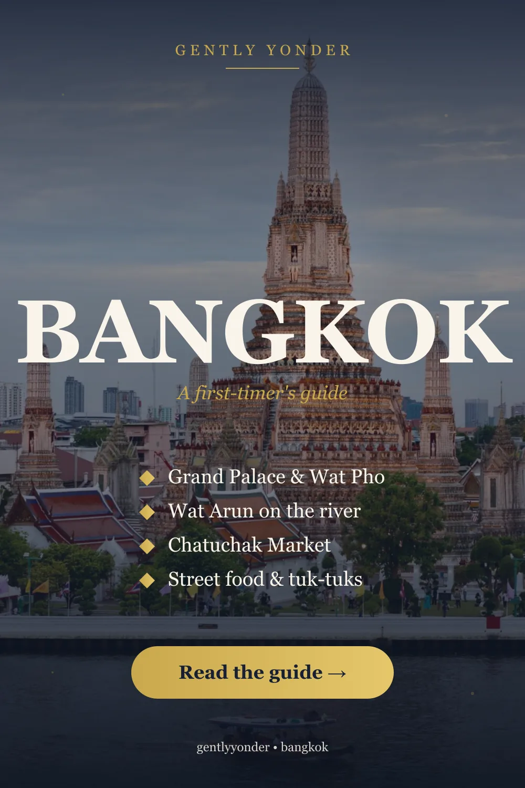
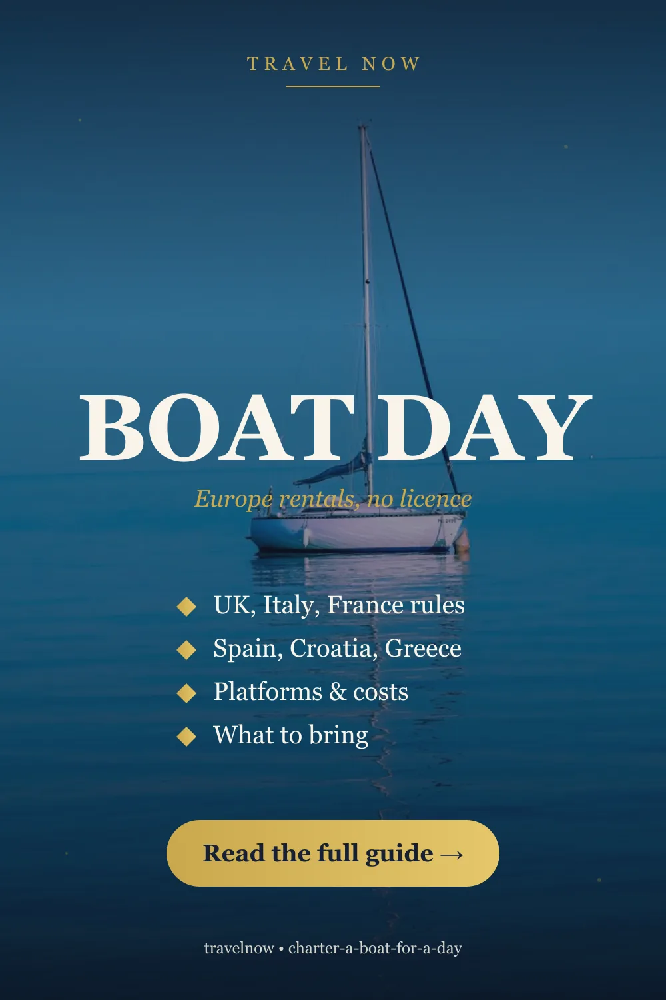

Answer first, and it’s the only trick that really matters: book the sunset round, not the dinner round. Around 28 cruise boats now work the Chao Phraya, and most run the same route twice a night — an earlier departure around 17:00 and the headline dinner departure around 19:00. On many ships it is the same vessel and the same buffet, and the earlier round costs roughly 30–50% less. You also get the part people actually remember: Wat Arun going gold, then floodlit, while you eat.
Everything else is a matter of matching the boat to what you want the evening to be.

What you actually see (it’s the same river for everyone)
Nearly all dinner cruises run a two-hour loop along the same stretch — roughly between Asiatique and the Rama VIII Bridge — so the sightseeing is not what separates a cheap boat from an expensive one. On the water you pass:
- Wat Arun, the Temple of Dawn, lit from across the river — the shot everyone comes for
- The Grand Palace and Wat Pho compound
- The Rama VIII Bridge, a single-pylon cable-stayed span that’s genuinely striking at night
- ICONSIAM and the historic riverside hotels
- The Asiatique Ferris wheel, which is the landmark you’ll orient by all evening
Because the route is shared, choosing by itinerary is pointless. Choose by departure time, food, and noise.
Sunset round vs dinner round — where the money is
This is the decision that changes the price most:
| Sunset round (~17:00) | Dinner round (~19:00) | |
|---|---|---|
| Light | Golden hour, then the lights coming on | Fully dark, everything floodlit |
| Price | Roughly 30–50% cheaper | The headline price |
| Food | Frequently the identical buffet | Same |
| Crowd | Quieter | Busier, more groups |
If your priority is photographs, the sunset round wins outright — you get both the gold and the dark within the same two hours. The 19:00 round is better if you want the city fully lit and don’t mind paying for it. You can compare Chao Phraya cruise departures and boats here, and check the same boat on a second platform — listings for identical ships routinely differ in price.
The boat tiers, honestly
Large buffet boats (the ones you’ll see advertised everywhere — Chao Phraya Princess and similar) are the volume option: big buffet, live band, Thai dance or a singer, several hundred people. They’re fine and they’re cheap. Set your expectations at “pleasant evening with a great view”, not “dinner out”.
Mid-tier and rooftop-deck boats — the White Orchid’s twilight departure from Asiatique is the type — trade some of the crowd for an open upper deck. If you care about photos, an open deck matters far more than an extra buffet station.
Premium and set-menu boats run smaller, serve a plated menu rather than a buffet, and keep the entertainment quieter. This is the tier to book for an anniversary; the cheap boats will not feel special no matter how good the skyline is.
The honest caution: amplified entertainment is standard on the big boats, and on some it is genuinely loud. If you want conversation, read recent reviews specifically for the words “music” and “karaoke” before booking.
Where you board — check this twice
Three main piers, and they are not close to each other:
- Asiatique the Riverfront — the most common, and an easy pre-cruise hour of night market
- ICONSIAM — the newest, with a free shuttle boat from Sathorn (Saphan Taksin BTS)
- River City Bangkok — nearer the old town
Getting to the wrong pier in Bangkok traffic is not a small mistake. Work backwards from your boarding time and allow far more road time than the map suggests — or take the BTS to Saphan Taksin and arrive by boat.

The cheap alternative locals actually use
You do not need a dinner cruise to get on the river. The Chao Phraya Express Boat — the public commuter service that stops along both banks — runs the same water for a normal fare, and the free ICONSIAM shuttle from Sathorn crosses it for nothing at all.
Ride the express boat up to Tha Tien for Wat Pho and the Wat Arun crossing in daylight, then take it back down at dusk. You’ll have seen the identical view the cruise boats sell, spent almost nothing, and kept your evening free. It is not a substitute for a celebratory dinner — but as “get on the Chao Phraya”, it’s the best value in the city.
Our guide to the things worth your time in Bangkok puts the riverside sights in a sensible order, and the first-timer’s guide to Bangkok covers arrival, transport and the pacing that stops the traffic ruining your day.
Choosing, in one paragraph
Want the best photos for the least money? Sunset round, open upper deck. Celebrating something? A smaller set-menu boat, not a buffet. Travelling with family or a group? A large buffet boat is genuinely the right call — the entertainment does the work. Only want the river, not the dinner? Express boat at dusk, then eat properly on land at ICONSIAM or in the old town. Short on evenings? Book the sunset round and you still have the night ahead of you.
If you’d rather walk the riverside temples with commentary before you sail, self-guided audio tours cover the old town at your own pace.
Practical notes
- Rainy season is real, roughly May to October. Rain usually arrives as a heavy hour rather than an all-day drizzle, and boats still sail — but an open top deck becomes unusable. Book a boat with covered seating if you’re travelling then.
- Dress code is smart-casual on the premium boats. The buffet boats don’t care. Nobody wants a jacket in Bangkok humidity, but shorts and flip-flops can get you turned away on the upper tiers.
- Arrive 45 minutes early. Boarding closes before departure and the boat will not wait; Asiatique in particular takes time to cross once you’re through the gate.
- Sort data before you land so you can find your pier and your boat — our eSIM guidance for Thailand covers the options, or set one up in advance. It’s also worth having cover you understand before an active trip.
Frequently asked questions
Are Bangkok dinner cruises worth it? For the view, yes — Wat Arun and the Rama VIII Bridge from the water are genuinely special. For the food, only on the premium set-menu boats. Most travellers get the best value from the earlier sunset departure rather than the headline dinner round.
What time should I book a Chao Phraya cruise? The sunset round, around 17:00, usually gives golden hour and the lights coming on, and costs roughly 30–50% less than the 19:00 dinner round — often on the same boat with the same buffet.
Where do Bangkok dinner cruises depart from? Mainly Asiatique the Riverfront, ICONSIAM and River City Bangkok. They are well apart from each other, so check your booking carefully and allow for Bangkok traffic, or reach Sathorn pier by BTS to Saphan Taksin.
What’s the cheapest way to get on the Chao Phraya? The Chao Phraya Express Boat, the public river service, for an ordinary fare — or the free ICONSIAM shuttle from Sathorn. Both cover the same stretch of river as the cruises.
Do the cruises run in the rainy season? Generally yes. Rain in Bangkok’s May-to-October season tends to come in heavy bursts rather than lasting all day, but an open upper deck stops being usable, so pick a boat with covered seating.
Sources & further reading
- Operator listings and schedules for Chao Phraya dinner cruises, 2026
- Departure-pier information for Asiatique the Riverfront, ICONSIAM and River City Bangkok
- Chao Phraya Express Boat public service routes
Boats, schedules, piers and prices change frequently on the Chao Phraya, and weather affects open decks. Confirm with the operator when you book. This article contains affiliate links; if you book through them we may earn a commission at no extra cost to you.
Frequently asked questions
Are Bangkok dinner cruises worth it?
For the view yes: Wat Arun and the Rama VIII Bridge from the water are genuinely special. For the food, only on the premium set-menu boats. Most travellers get better value from the earlier sunset departure than from the headline dinner round.
What time should I book a Chao Phraya cruise?
The sunset round at around 17:00 gives you golden hour and the lights coming on, and costs roughly 30-50% less than the 19:00 dinner round, often on the same boat with the same buffet.
Where do Bangkok dinner cruises depart from?
Mainly Asiatique the Riverfront, ICONSIAM and River City Bangkok. They are well apart, so check your booking and allow for traffic, or reach Sathorn pier by BTS to Saphan Taksin.
What is the cheapest way to get on the Chao Phraya river?
The Chao Phraya Express Boat, the public commuter river service, for an ordinary fare, or the free ICONSIAM shuttle boat from Sathorn. Both cover the same stretch of river as the dinner cruises.
Do Bangkok river cruises run in the rainy season?
Generally yes. Rain between roughly May and October tends to arrive in heavy bursts rather than lasting all day, but an open upper deck becomes unusable, so choose a boat with covered seating in that season.
Keep reading on Gently Yonder
- Where to Book a Bangkok Dinner Cruise — KKday for the cheapest Chao Phraya boats; Klook for the headline vessels and clearer piers — but the sunset departure saves more than either.
- Bangkok: The Places Worth Your Time — The Grand Palace, Wat Pho and Wat Arun, the river and canals, markets, and Ayutthaya.
- Bangkok: A First-Timer's Guide — The Grand Palace and Wat Arun, the markets, street food and the river — how to take on Bangkok.
- Best eSIM for Thailand (2026) — Coverage across Bangkok, Chiang Mai, and the islands, and how much data you'll need.
- How to Save Money on International Travel — The seven levers that actually move the number — paying in local currency, eSIM over roaming, flexible dates, and the pass arithmetic.
- Travel Insurance Compared — SafetyWing vs World Nomads vs Genki — coverage, exclusions, and how to choose.